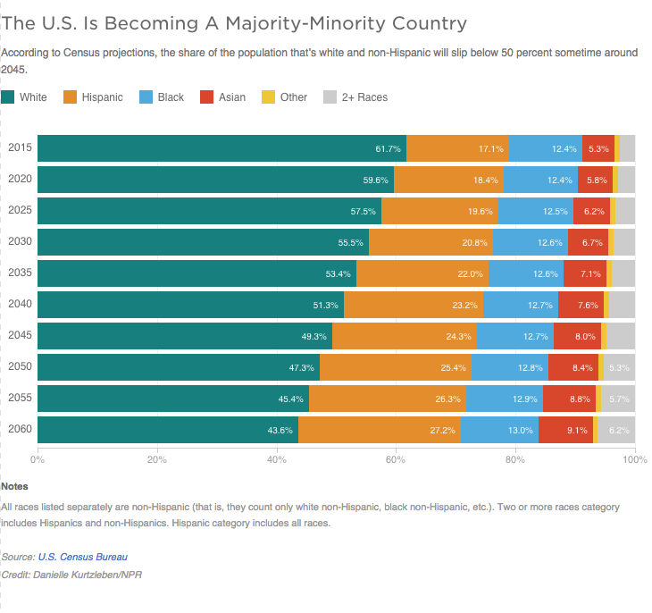

According to Census projections, the share of the population that’s white and non-Hispanic will slip below 50 percent sometime around 2045.

Notes
All races listed separately are non-Hispanic (that is, they count only white non-Hispanic, black non-Hispanic, etc.). Two or more races category includes Hispanics and non-Hispanics. Hispanic category includes all races.